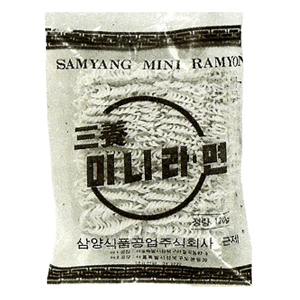
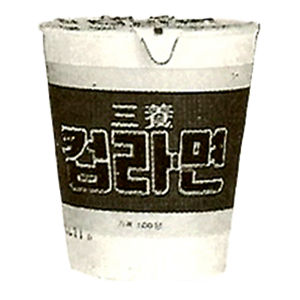
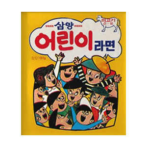
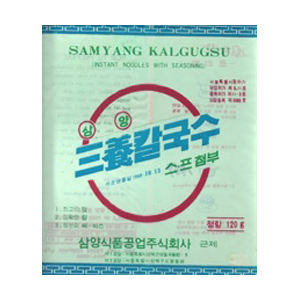
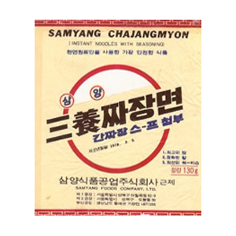
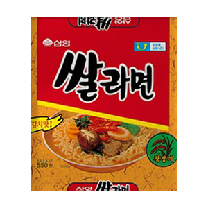
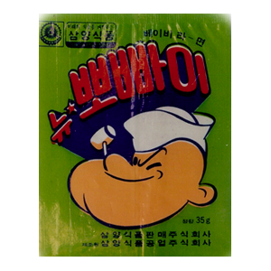

삼양식품 기념 역사관
오랜 전통과 끊임없는 노력으로 성장한 삼양식품 역사관에 오신 것을 환영합니다.
이건 전중윤
추억의 제품
-

국내 최초 미니라면
1967년에 출시된 미니라면은 상품명 그대로 기존의 라면보다 작은 사이즈의 제품으로 당시 획기적인 제품 아이디어로 주목 받았습니다.
-

국내 최초 컵라면
라면이 국내에 소개된지 얼마 안된 1972년 3월, 끓인 물만 부어 3분후에 바로 먹을 수 있는 신개발품 '컵라면'이 탄생하였습니다.
-

어린이 라면
1970년, '어린이라면'이 개발되었습니다. 당시 어린이용 라면을 따로 판매하여 좀 더 다양한 연령층이 라면을 즐길 수 있도록 하였습니다.
-

국내 최초 건면
1969년 7월, 건면 제품인 '삼양칼국수'가 출시되었습니다. 한국인의 입맛에 맞는 국물과 기름에 튀기지 않은 면발이 조화를 이룬 담백한 맛의 제품입니다.
-

짜장라면
1970년 3월 4일, 삼양식품은 '삼양짜장면'이란 이름의 짜장라면을 출시했습니다. 이후 1985년 4월 '짜짜로니'브랜드명으로 바뀌었습니다.
-

쌀라면
1989년 12월, 쌀 30%를 혼합한 면에 다시 우유를 혼합하여 영양의 균형을 갖춘 제품으로 담백, 개운하며 면발이 부드럽고 산뜻한 느낌을 주는 제품입니다.
-

뽀빠이
1972년 2월, 짜장면 정도의 굵기로 튀겨진 어린이용 영양과자로 단맛과 고소한 맛에 비타민 B1, B2, 칼슘 등을 첨가한 최초의 라면과자 '뽀빠이' 입니다.
우지사건
-
1989.11
삼양식품 우지사건 그리고 진실
“우지사건”의 모든 것
-
삼양식품을 위기로 몰았던 “우지사건” 이란 무엇일까?
“우지사건”은 무지한 일부 검찰이 오인으로 사실을 왜곡하여 무리하게 수사한 사건입니다.
-
합법적 절차를 밟아 식용 우지를 수입해
우수한 식품으로 생산해 온 “삼양식품”
1989년 11월 3일 갑작스럽게 “보건범죄 단속에 관한 특별조치법”과 “식품위생법” 위반을 구실로
기업 대표와 실무자들이 검찰에 구속 입건되었습니다.
-
“우지사건”은 6공화국 시대 검찰의 진실 왜곡!
사건초기 검증도 거치지 않은 채 “공업용우지”라는 용어를 발표하여 국민들을 대혼란에 빠뜨렸습니다.
이로 인해 고급인력들이 회사를 떠났고 도봉동 공장은 3개월여 동안 문을 닫고 제품을 생산하지 못했습니다.
또한 60%에 달했던 라면업계 1위인 당사의 시장 점유율은 15%로 떨어졌으며, 소비자의 신뢰는 여지없이 무너졌습니다.
-
“우지사건”으로 '라면 유·무해 논쟁'을 유발, 국민의 불신 증폭
사건 발생 12일 만인 1989년 11월 16일, 당시 김종인 보건사회부장관의 “라면 무해 판정”을 계기로 들끓던 여론 진정.
1989년 11월 28일, 법원의 보석 결정으로 구속자 전원 석방. 사법적 판결인 법원심리로 접어듦.
-
결국 사건 발생 7년 9개월 만인 1995년 7월 14일
서울고등법원에서 무죄를 선고하였습니다.
5년여 동안 재판부를 5번이나 교체.. 늦어진 서울지방법원의 판결.. 반성하는 기색도 없는 검찰은 대법원에 상고를 제기하였지만
대법원은 이를 기각하고 원심인 서울 고등법원의 판결 내용대로 무죄 판결을 확정 선고함으로써 이 사건에 대한 법적 분쟁을 종식시켰습니다.
-
2,3등급 우지도 정제 후에는 식용우지로 사용할 수 있다!
이 사건 우지는 판매를 목적으로 한 미국의 우지 등급 분류상 16등급 중 2, 3등급인 우지로 채취한 상태 그대로는 곧바로 식용할 수 없으나,
정제과정을 거치면 식용우지로 사용할 수 있다는 것이 미국 동물유지협회와 한국식품과학회의 공식 견해입니다.
-
일본에서는 수십 년이래 현재까지도
우지 · 돈지 · 팜유를 3:3:3의 비율로 사용되고 있습니다.
우지는 총 16등급으로 분류하고 있으며, 이 사건 우지인 2등급 “톱화이트댈로우” 나 3등급 “엑스트라펜시탤로우”는
식용을 목적으로 도살한 건강한 소에서 채취한 신선한 지방부분으로, 그 채취 당일에 청결한 위생 상태하에서 용출과정을 거쳐 제조되며,
아울러 적절한 운반 및 보관 수단에 의하여 운반 및 보관되는 것입니다.
그러므로 식품원료로서의 구비 요건을 갖추고 있고, 탈취·탈산·탈색 등 정제에 의하여 식용우지로 사용함에 어떠한 장애 요소나 위생에 문제가 있을 수 없습니다.
-
참고 견뎌낸 인고의 시간
수천억 원대의 피해, 무엇보다 40년 동안 “정직과 신용”을 바탕으로
국민 건강 증진에 노력해 온 회사의 명예가 하루아침에 실추된 것이 무엇보다도 가슴 아픈 시련이었습니다.
또한 사건 발생 이전까지 만해도 “삼양라면”은 라면의 원조로서 국내 인증은 물론
세계 식품업계로부터 공인을 받아 수출상품으로 각광을 받았는데, 일순간에 불량식품으로 전락해 수출시장도 대부분 잃게 됨으로써 수십 년간 공들여 조성해 놓은 국제시장에서의 기반이 붕괴되는 아픔을 겪었습니다.
-
법은 정의의 편!
경쟁사는 미주지역에서까지 역선전을 반복함으로써 당사는 시장점유율이 60%에서 15%로 감소하는 비참한 상황 가운데도
삼양식품은 과학적이고 객관적인 확실한 증거와 증언을 통하여 진실을 밝히는데 최선을 다해 왔고,
그 결과 고등법원과 대법원에서는 무죄판결을 선고 받았습니다.
이러한 대법원의 최종 무죄판결은 사필귀정의 신념과 법은 정의의 편이라는 진실,
진실은 언제나 꼭 밝혀진다는 사실을 확인시켜 주는 계기가 되었습니다.
-
되풀이되지 않아야 하는 사건
그러나 7년 9개월간 법적공방을 통해 무죄판결을 거든 승리의 기쁨보다는 회사가 그 동안 겪었던 인고의 시간과 수천억 원의 손해를 감수하는 비애가 너무도 컸습니다. 한 모범기업이 하루 아침에 소비자의 불신을 받고 그로 인해 기업의 사기와 의욕저하를 야기시켰음은 물론
국내외적으로 인증된 제품의 신용상실이라는 막대한 손실을 가져왔습니다.
앞으로 우리가 겪었던 전철을 또 다시 되풀이되지 않기 위해서는 식품성분에 대해 유해성 논란 문제는 식품관련 전문가 단체에 의한 과학적 분석과 판단이 선행되어져야 한다고 다시금 강조하고 싶습니다.
-
무죄 판결을 받으리라고 확신했습니다!
사건이 한창일 때, 모두들 회사가 문을 닫는다고 했습니다. 그때 ¼이나 되는 1천여명의 직원이 회사를 떠나기도 했으니까요.
전중윤 회장은 당시 사업적 손실보다도 유능한 인재를 잃는 것이 더 마음이 아팠다고 회고 했습니다.
그러나 그는 한번도 좌절하지 않았다고 강조했습니다.
법과 정의가 살아있다면 당연히 무죄 판결을 받으리라고 확신했습니다.
-
보답하겠습니다!
2,000여명의 삼양가족 일동은 사건 이후 절치부심 노력한 결과,
사업의 안정화를 이루며 우지파동으로 이탈되었던 고객들이 다시 삼양식품의 제품을 애용해 주고 계십니다.
이에 삼양식품은 모든 정성과 최선을 다해 안전한 식품으로 고객 여러분에게 보답하도록 하겠습니다.